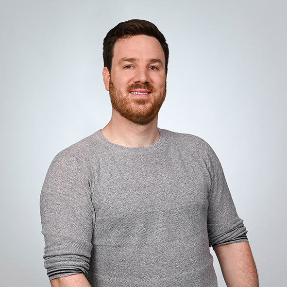

I am Gidon Frischkorn, currently an SNF Ambizione Fellow at the Cognitive Psychology Lab at the Department of Psychology, University of Zurich, and a research and teaching associate for Statistics and Methods at the Faculty of Behavioral Sciences and Psychology at the University of Lucerne. I did my PhD at Heidelberg University under Dirk Hagemann, and was elected a Fellow of the Psychonomic Society in 2024.
I work on measurement — specifically, on whether the things we measure in psychology actually track the cognitive processes they are supposed to. My research uses formal mathematical models to connect observable data (response times, accuracy, choices) to the underlying processes that produced them. Most of my empirical work is in working memory, processing speed, and attention, but the question running through all of it is the same: are we measuring what we think we are?
For me, a statistical model is a formal statement about how a cognitive process works. Fitting it to data is a way of asking whether a theoretical idea is actually coherent. That is why my work pairs formal models with targeted experimental designs — so both the theory and the data are on the hook for what conclusions are defensible.